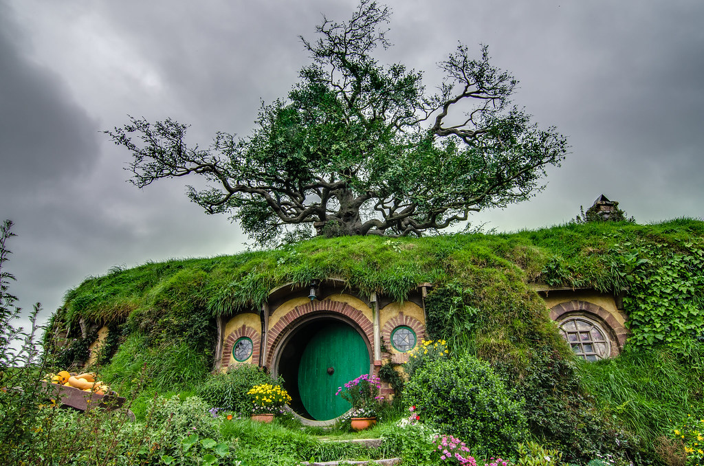
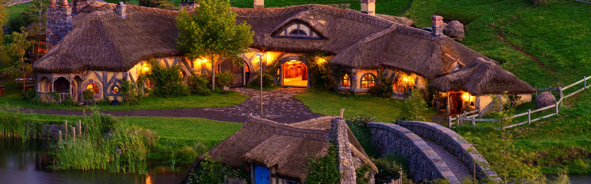
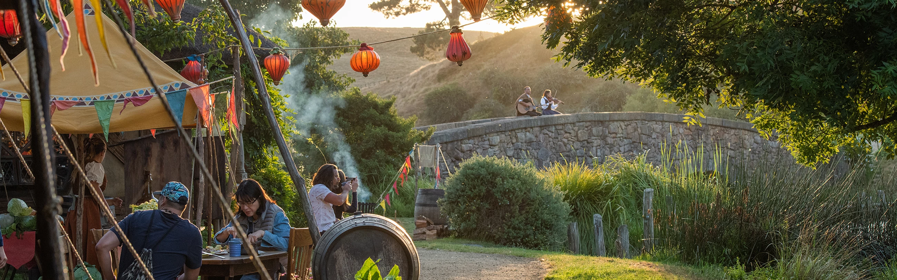
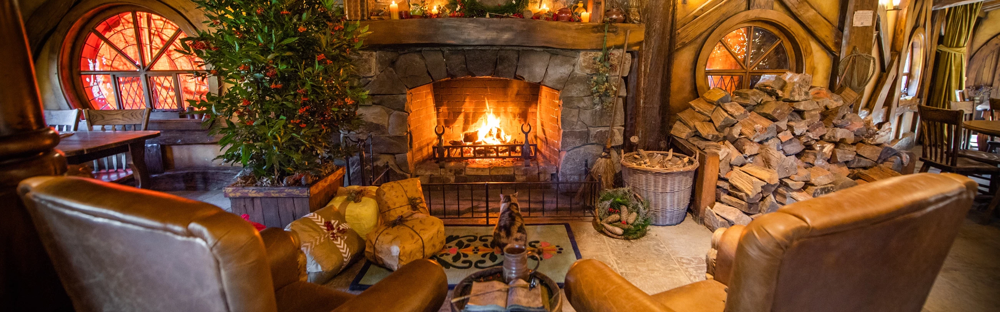

Events
Hobbiton Movie Set Tour
Join us and experience the real Middle-earth™ at the Hobbiton™ Movie Set, where, in the heart of the Waikato region, you can step into the lush pastures of the Shire™, as seen in The Lord of the Rings and The Hobbit trilogies. Fall in love with the Alexander family sheep farm, just as acclaimed director Sir Peter Jackson did, as you journey through the unequivocal beauty of the land, with the mighty Kaimai Ranges towering in the distance. Your guide will then escort you around the set, showing the intricate detailing, pointing out the most famous locations and explaining how the movie magic was made. You will be fully guided on a walking tour around the 12 acre set; past Hobbit Holes™, the Mill and into the world-famous Green Dragon™ Inn, where you will be presented with a complimentary, exclusive Hobbit™ Southfarthing™ beverage to conclude your own Middle-earth™ adventure.
The Lord of the Rings 20 Year Anniversary Celebration
The evening will begin following some of the same paths as Frodo and Gandalf did in the first scenes of the film as you journey through the enchanting village on a guided tour. Your guide will escort you through the twelve-acre set recounting fascinating details of how this location was transformed and the movie magic was made here. Visit Bag End, home of Bilbo and Frodo Baggins, and take in the breathtaking vista overlooking the landscape. As you continue down the meandering paths of the Shire™, you’ll arrive into The Green Dragon™ Marketplace – a bustling, vibrant festival-like atmosphere with traditional Hobbit™ fare served from the market stalls as a light supper. Sample a selection of treats from the stalls and make yourself at home in the cosy interiors of The Green Dragon Inn with a stein of famous Hobbit™ Southfarthing™ beverages fresh from the kegs or a glass of Middle-earth wine, and join in on the interactive games. As the sun goes down, you’ll be invited back up to the Party Field, on the very soil that Bilbo’s eleventy-first birthday took place, where a 13 metre outdoor cinema screen, seating and snacks will be waiting. Sit back, relax and enjoy the theatrical cut of The Fellowship of the Ring.
A Hobbiton Christmas
To begin the festivities, you will have the chance to experience Middle-earth as you have never seen it before; with a fully guided tour of the Shire™ at dusk. Your guide escorts you through the twelve-acre site recounting fascinating details of how the movie set was created. Throughout the movie set you will see 44 complete Hobbit Holes™, the thatched Millhouse, double arch stone bridge and of course the famous Green Dragon™ Inn. Your tour will conclude at the masterfully recreated Inn and waiting for you will be a specially brewed eggnog to get you in the Christmas spirit. With an eggnog in hand, relax inside by the two indoor fireplaces or enjoy the warm summer evening and explore the Bywater Beer Garden overlooking the movie set. Inside the Green Dragon Inn be sure to check out the Christmas tree which may even offer the delight of some festive treats! Hearty sized canapés will be passed around as you listen to the themed entertainer before being escorted up to the party marquee for a Christmas buffet dinner. As you step inside the fully themed yellow canvas marquee, where the vibrant bunting and colourful lanterns allow you to be immersed in the festive magic of the movies, a buffet dinner full of traditional Hobbit fare will be waiting for you to fill your bottomless bellies, and as is the tradition in the Shire, second helpings are encouraged. Throughout the evening you can enjoy our exclusive Southfarthing™ range of beers, cider or ginger beer and Middle-earth™ wine range. To conclude this premium Hobbiton Movie Set experience, after dinner you will re-join your guide and make your way back through the wandering paths of Hobbiton. The trails will be illuminated to help light the way. This stunning journey under moonlight will travel through the village breathtakingly lit up with Hobbit Hole chimney’s smoking and lanterns glowing against the darkness.
